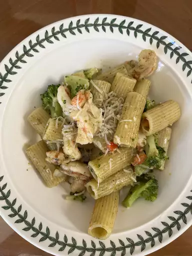

Pesto Pasta
Pesto Pasta is a very easy dish to make and can taste good hot or cold

ingredients:
- Pasta
- Onion and Oil
- Pesto
- Seasoning
- Cheese
How to Make Pesto Pasta
- Boil the pasta in salted water and drain.
- Cook the onion in oil, then stir in pesto and seasoning.
- Add the pesto mixture to the hot pasta and toss with cheese.
Back to Home Page